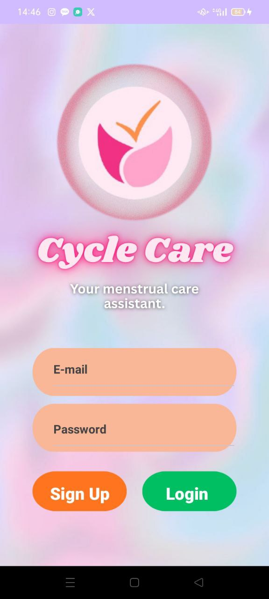
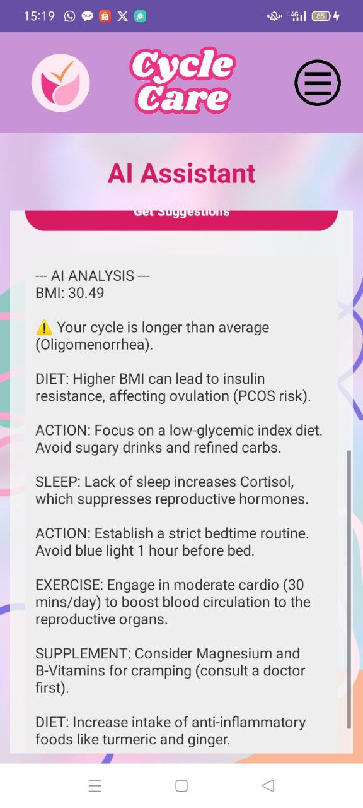
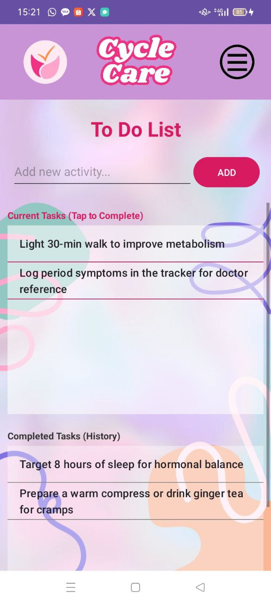

Many women face menstrual irregularities but lack personalized guidance on how lifestyle changes (exercise, diet, sleep) can help regulate their cycles without immediate medical intervention.
An AI-driven mobile assistant that analyzes user health data and provides customized activity recommendations to help transition irregular cycles back to a healthy range.



The biggest challenge was integrating the AI logic within a mobile environment while maintaining a smooth user experience. Ensuring the app felt supportive rather than purely clinical was also a key design hurdle.
I deepened my knowledge of user-centric design and learned how to simplify complex AI outputs into actionable insights for everyday users. This project also improved my skills in mobile backend synchronization.